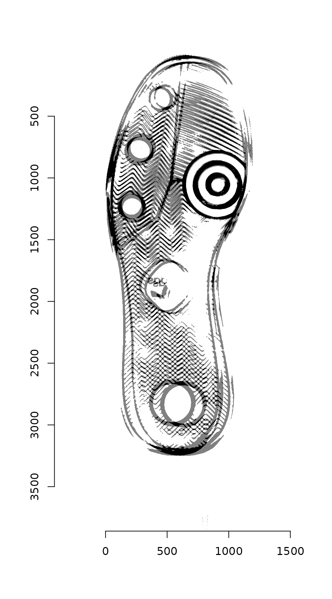
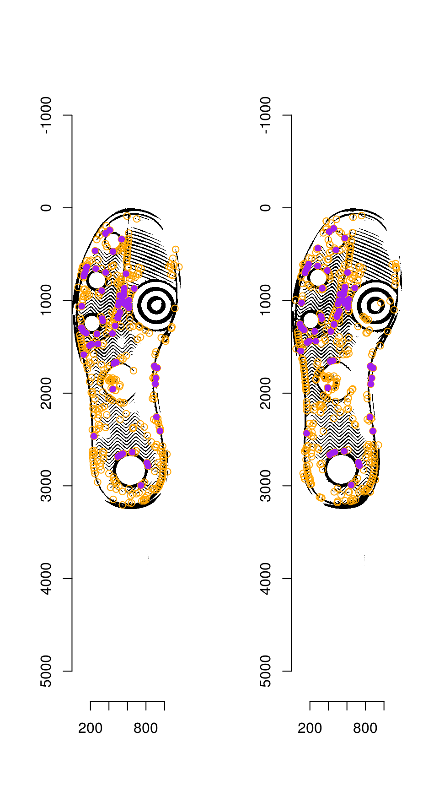
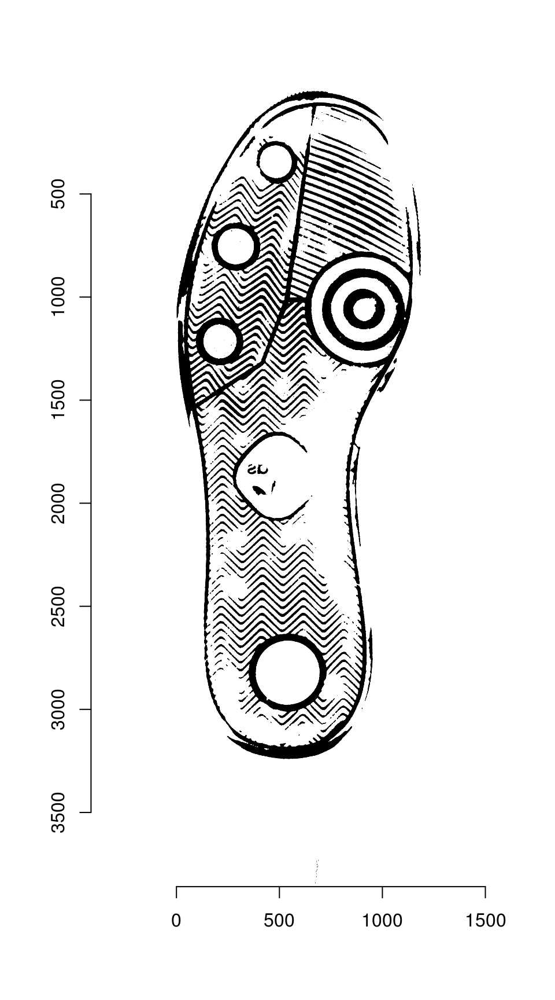

SURF-based Keypoint Alignment
Susan VanderPlas
2018-09-24
Source:vignettes/keypoint-SURF.Rmd
keypoint-SURF.RmdThe R code underlying the functions in this vignette were borrowed with permission from Vinces Gaitan’s blog post: https://www.kaggle.com/vicensgaitan/image-registration-the-r-way/notebook
I have modified the code where necessary in order to make it more pipeline-friendly and function oriented.
imlinks <- system.file(package = "ShoeSampleData", "extdata/") %>%
list.files(pattern = "036285L", full.names = T) %>%
sort()
clean_shoe_img <- function(im) {
suppressMessages({
im_bbox <- im %>%
imsplit(axis = "c") %>%
(function(x) is.finite((x[[1]] + x[[2]]) / x[[3]])) %>%
as.cimg() %>%
(function(x) x == 1)
crop.bbox(im, im_bbox) %>%
grayscale() %>%
map_halfimg(fun = autocrop) %>%
crop.borders(nx = 5, ny = 5) %>%
autocrop() %>%
threshold() %>%
shrink(3) %>%
grow(3) %>%
autocrop() %>%
# img_rotate_refit() %>%
# magrittr::extract2("img") %>%
grayscale()
})
}
img_a <- load.image(imlinks[1]) %>% clean_shoe_img()
img_b <- load.image(imlinks[2]) %>% clean_shoe_img()
plot(imlist(img_a, img_b))Image which will be used throughout this tutorial
We need to pad image a so that it is the same size as image b:
dim(img_a)
# [1] 1179 3847 1 1
dim(img_b)
# [1] 1196 3860 1 1
pad_size <- dim(img_b) - dim(img_a)
img_a <- pad(img_a, nPix = pad_size[1], axes = "x", pos = 1, val = max(img_a)) %>%
pad(nPix = pad_size[2], axes = "y", pos = 1, val = max(img_a))We can then overlay the two images to see how far apart they are:

Step 1: Keypoint Detection
Use the image_surf() function in the image.dlib package to identify keypoints for alignment
if (!"image.dlib" %in% installed.packages()) {
devtools::install_github("bnosac/image/image.dlib")
}
library(image.dlib)
# image_surf requires a bmp file...
get_surf <- function(im, n = 500) {
tmpbmp <- tempfile(fileext = ".bmp")
save.image(im, tmpbmp)
image_surf(tmpbmp, max_points = 500)
}
sp_a <- get_surf(img_a)
sp_b <- get_surf(img_b)
centers_a <- data_frame(mx = sp_a$x, my = sp_a$y)
centers_b <- data_frame(mx = sp_b$x, my = sp_b$y)
kpf_a <- sp_a$surf
kpf_b <- sp_b$surfWith SURF, we can skip the image orientation and feature detection steps, as features are generated with an angle as part of the SURF algorithm.
Step 2: Match points
Match points are calculated using the K nearest neighbors algorithm, combined with some thresholding by distance.
Step 5: RANSAC
RANSAC is then used to find points that have similar homography.
par(mfrow = c(1, 2))
plot(img_a)
centers_a %$% points(mx, my, col = "orange")
points(match_points$points_a[ransac_points$inliers, ], col = "purple", pch = 16)
plot(img_b)
centers_b %$% points(mx, my, col = "orange")
points(match_points$points_b[ransac_points$inliers, ], col = "purple", pch = 16)
Step 6: Image Warping
The homography can be used to warp one image onto the other:
map_fcn <- map_affine_gen(ransac_points$homography)
img_a_warp <- imwarp(img_a, map_fcn, direction = "backward", boundary = "neumann")
plot(img_a_warp)
We can then overlay the two images:
blank_channel <- as.cimg(img_b > 0 & img_a_warp > 0)
overlaid_images <- imappend(imlist(img_a_warp, blank_channel, img_b), axis = "c")
plot(overlaid_images)
Areas that are in the first image only are shown in red; areas in the second image only are shown in blue. Areas in both images are shown in black.